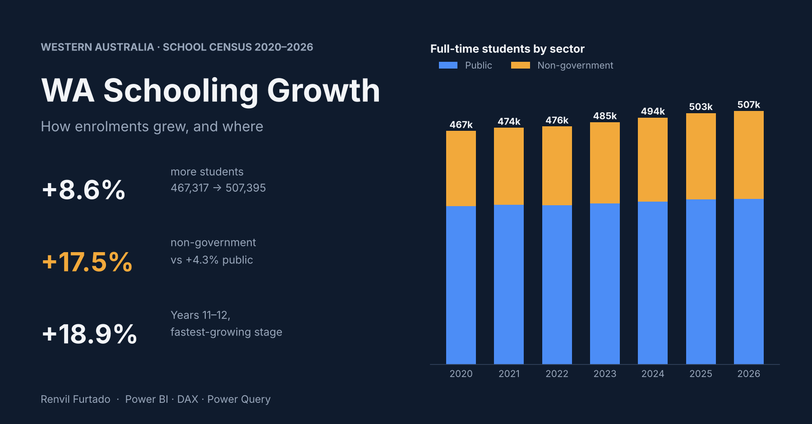

Power BIDAXPower QueryData modelling
WA School Enrolment Growth, 2020–2026
Is WA's school network keeping pace with enrolment growth, and where is the pressure building?
Using WA Department of Education census data, I validated that every total reconciled, reshaped the data in Power Query, built a star-schema model with shared year and sector dimensions, and wrote DAX measures that detect the first and latest year automatically, so a new census year needs no measure changes.
The three-page report covers an executive overview, growth drivers (by stage and metro vs country), and a 2026 snapshot of all 1,150 schools.
View project on GitHub| Measure | 2020 | 2026 | Change |
|---|---|---|---|
| Students | 467,317 | 507,395 | +8.6% |
| Schools | 1,129 | 1,150 | +1.9% |
| Metro students | 370,536 | 408,392 | +10.2% |
| Country students | 96,781 | 99,003 | +2.3% |
| Non-govt share | 32.1% | 34.7% | +2.6 pts |
- Enrolments are outgrowing schools: the average school now serves 441 students, up from 414.
- Growth is concentrated in Perth; country WA added no new schools.
- Non-government enrolments grew 17.5% versus 4.3% for public schools.
- Years 11–12 grew 18.9%, the fastest-growing stage.